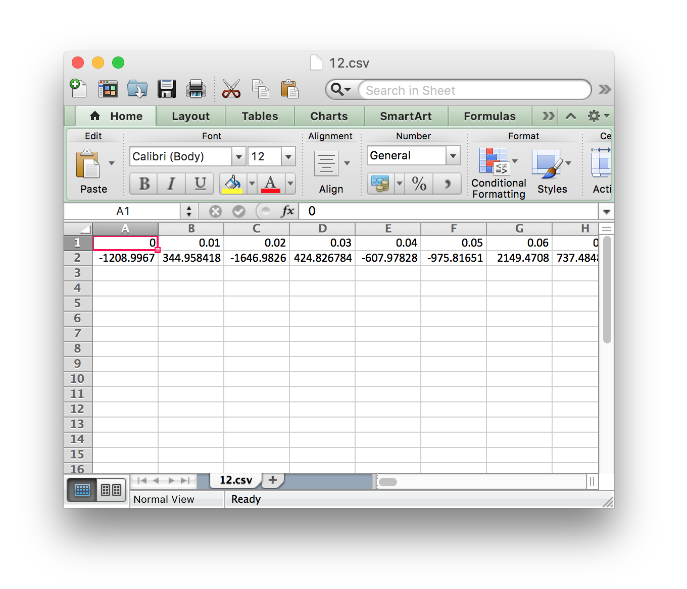

This UI will allow you to query an underlying database of time series in specific ways. You can either
-
Specify a time series ID:
[Specify an integer between 0 and 999.] - Upload your own time series: [Q: What should the time series file look like? A: See below.]
-
How many similar time series do you want to see?
[Specify an integer between 0 and 998.]
(metadata of five most similar time series)
What should the time series file look like?
It should be a CSV file where the first "row" contains the times and the second "row" contains the values. See below of an example of what such a file would look like in Microsoft Excel.

- If a time series ID is specified AND a file is uploaded, the underlying JavaScript will ignore the uploaded file and return results for the time series ID.
- In a perfect world there would be error checking against the specified integer and the uploaded file...